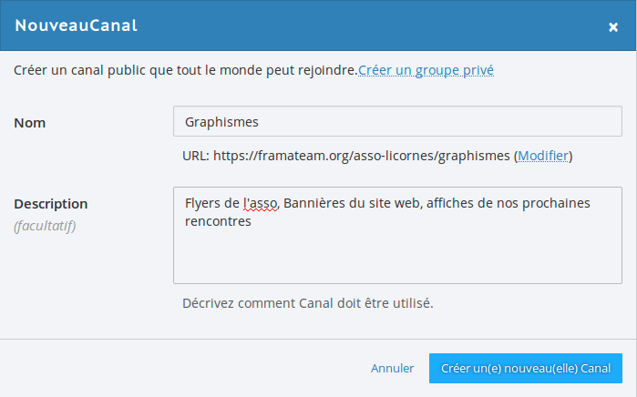
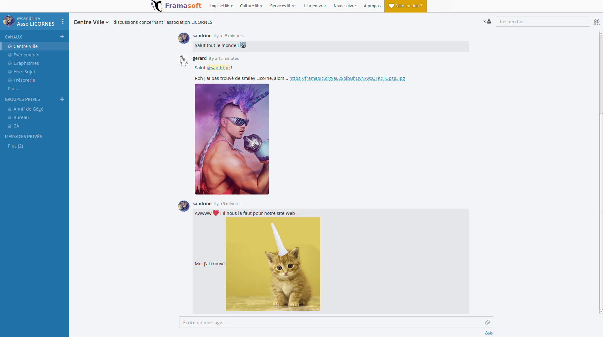
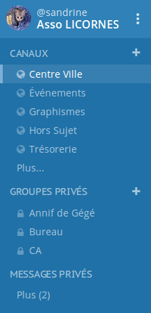
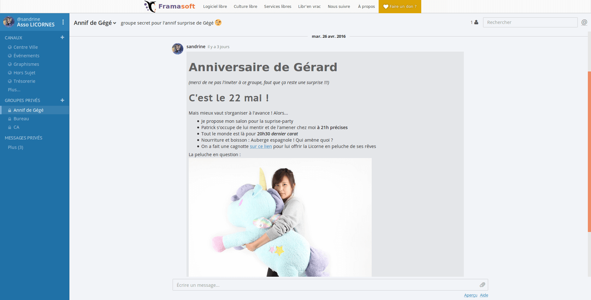
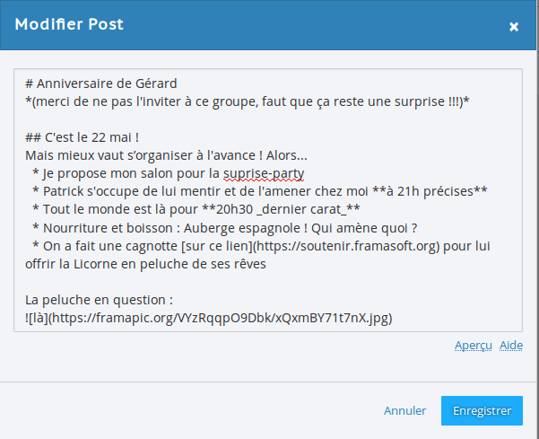
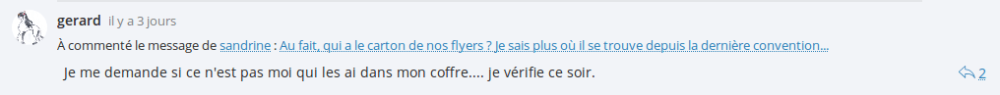
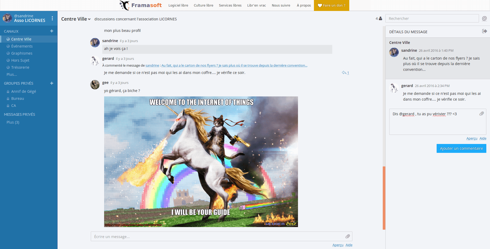
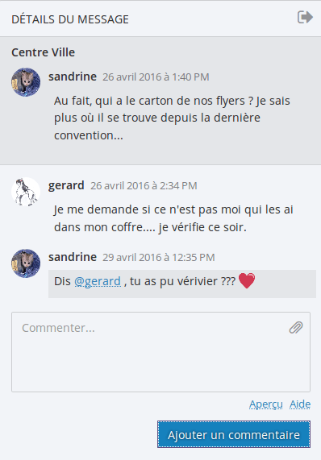
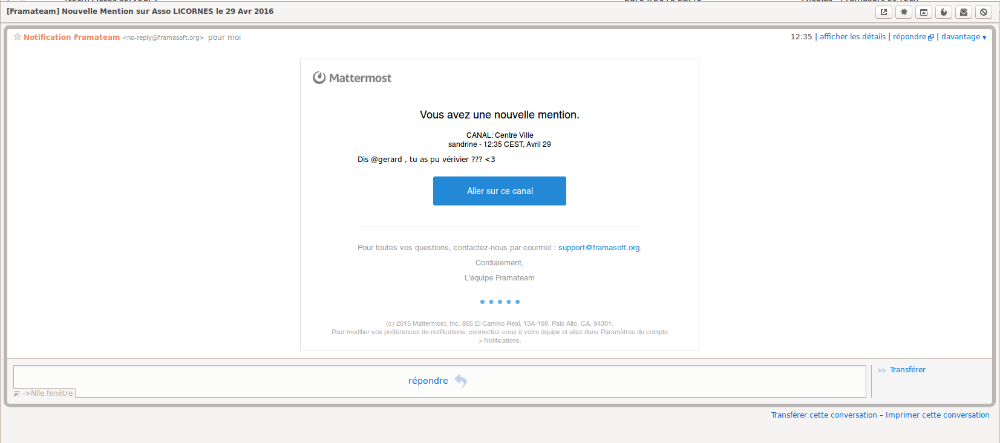

Exemple d’utilisation de Discuter #
L’exemple ci-dessous a été rédigée par Framasoft pour Framateam (leur instance Mattermost), mais tout fonctionne exactement de la même façon sur Discuter !
L’asso LICORNES veut quitter son groupe Facebook #
Sandrine, la présidente de l’association LICORNE, en a marre d’utiliser Facebook pour discuter avec les membres.
Créer son équipe #
Elle décide donc de se créer un compte Discuter. Ça, c’est facile : le truc classique, en trois étapes :
- Se créer un compte avec une adresse email et un mot de passe.
- Créer son équipe (chouette : c’est elle qui décide si l’équipe entre
dans l’annuaire public ou non ! Si oui, toute personne avec un compte sur
Discuterpourra rejoindre l’équipe, autrement, seules les personnes invitées pourront le faire) - Inviter les membres de l’asso avec leur email (elle teste avec l’email de Gérard, elle invitera les autres quand ce sera prêt)
Très vite, elle se rend compte que Discuter marche sous forme de canaux de discussion : il y a déjà le Centre Ville, pour la vie de l’asso, et le Hors Sujet, pour les plaisanteries ou les conversations hors-sujet. Ça tombe bien, chez les LICORNES, ça aime bien plaisanter ou discuter de tout et de rien. Elle décide de créer en plus un canal pour son équipe de graphistes tout terrain, qui font des affiches à paillettes et des sites web mirifiques.

Premiers échanges #
Et voilà que pendant qu’elle mitonnait ses canaux de discussion dans son coin, Gérard est déjà arrivé sur leur Discuter et y poste le lien vers une image de licorne musclée qu’il a trouvée… Magie de Mattermost : l’image s’affiche automatiquement ! Sandrine répond — forcément — avec un chaton-licorne.

Création de canaux #

Faut dire que pendant ce temps, Sandrine a eu le temps de créer plusieurs canaux de conversations.
-
Des publics (ouverts à tout membre de la team) :
- Le Centre Ville et le Hors Sujet, qu’elle a décidé de garder
- Le canal pour les Graphistes est prêt.
- Il en fallait un pour les Événements de l’asso
- Pour la Trésorerie (laissons-les parler sous de leur côté, se dit-elle…)
-
Mais aussi des groupes privés (où il faut sélectionner les membres de la team qui y participeront) :
- Un pour le Conseil d’Administration
- Un pour le Bureau
- Un pour préparer l’anniversaire de Gérard dans son dos ;)
Mise en forme des messages #
D’ailleurs, pendant que Gérard s’amuse à inviter les autres membres du groupe sur Discuter (en leur envoyant un simple lien d’invitation à rentrer dans l’équipe !), elle décide de préparer le message pour organiser la surprise-party de l’anniversaire de son comparse : 
Alors comment a-t-elle fait pour mettre en page un aussi joli message ?
Sandrine avait tout simplement cliqué sur “aide” en bas à droite et a
lu dans la documentation, qu’il suffisait d’écrire son message en
Markdown (LA syntaxe facile à
retenir et utiliser). D’ailleurs elle a fait une coquille sur son
message, elle clique donc sur le […] à droite de son message pour le
modifier :

Fil de discussion et recherche #
De retour sur la discussion principale, Sandrine se rend compte que sa question à Gérard (« Mais où sont passés nos flyers ? ») s’est un petit peu perdue dans les échanges. Néanmoins Gégé a eu la bonne idée de répondre directement à sa demande en utilisant la flèche à droite de son message. 
Car oui : le logiciel Mattermost qui fait tourner Discuter permet de conserver tous les messages et de faire des recherches dans les discussions. Quelques jours plus tard, Sandrine fait une simple recherche du mot “flyer”, ce qui lui permet de retrouver son message ainsi la réponse de Gérard. Elle le relance donc : 
Notifications #
Sandrine connaît son Gégé-accros-aux-emails : elle a donc mis une arobase devant son pseudo :

Gérard n’était pas devant son écran, il a reçu un joli email de Discuter pour lui signaler qu’il a été mentionné dans une conversation. 
La morale de cette histoire…? #
C’est que les flyers étaient bien dans le coffre de la voiture de Gérard. … C’est surtout que les LICORNES se sont un peu plus libérées de Facebook, et peuvent désormais organiser leurs distributions de paillettes sans craindre de nourrir de leurs data l’ogre bleu de Zuckerberg. Et même si vous croyez que les LICORNES n’existent pas, Discuter existe bel et bien. À vous d’y créer votre (ou vos) équipe(s) sur Discuter !